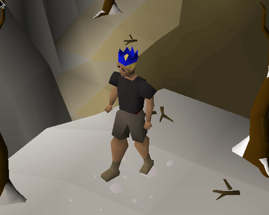

Laughing Biscuit

Perfection is achieved, not when there is nothing more to add, but when there is nothing left to take away...
Principles
Write accessible code for anybody to use.
- Suckless - Self documenting, minimal code
- Scriptable - Encourage Automation - CLIs over UIs - Reuse
- Portable - Run it anywhere
Working Environment
Focusing on mastering a minimal, portable toolset.
- Base - Anything (Bare Metal inc. Raspberry Pi / VM / Termux / Docker)
- OS - Alpine Linux
- Core- busybox-extras curl git lastpass-cli tmux
- Optional- chromium docker dwm st
Popular Projects / Articles
- Apigee Reference Bank
- Apigee DevRel
Wheels
Want to learn about my biking history or long road trips? Symmetric Bruises!
Travel

Source
Gaming
OSRS Main

My current goal is 83 Construction, which requires:
- ~14M GP for Teak Planks
- Some GP for Butler
- Dragon Slayer 2 for Cape
- W/C and Fletching for AFK Income
- Barrows for Active Income